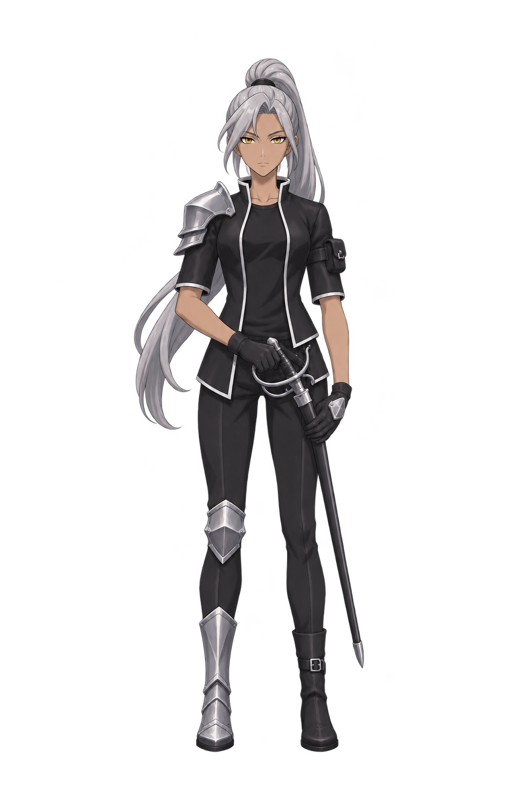
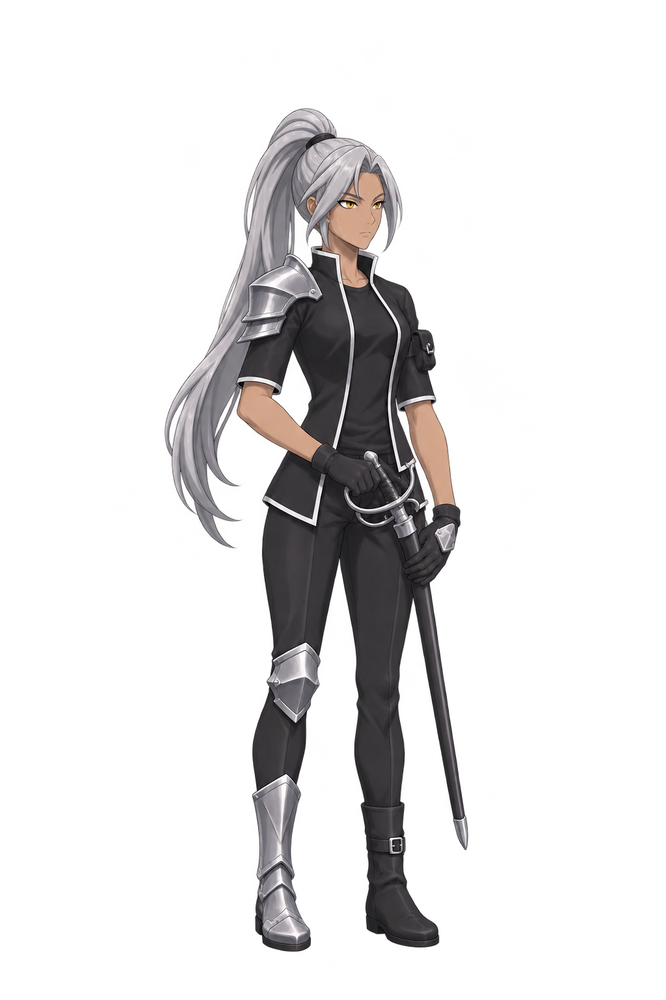
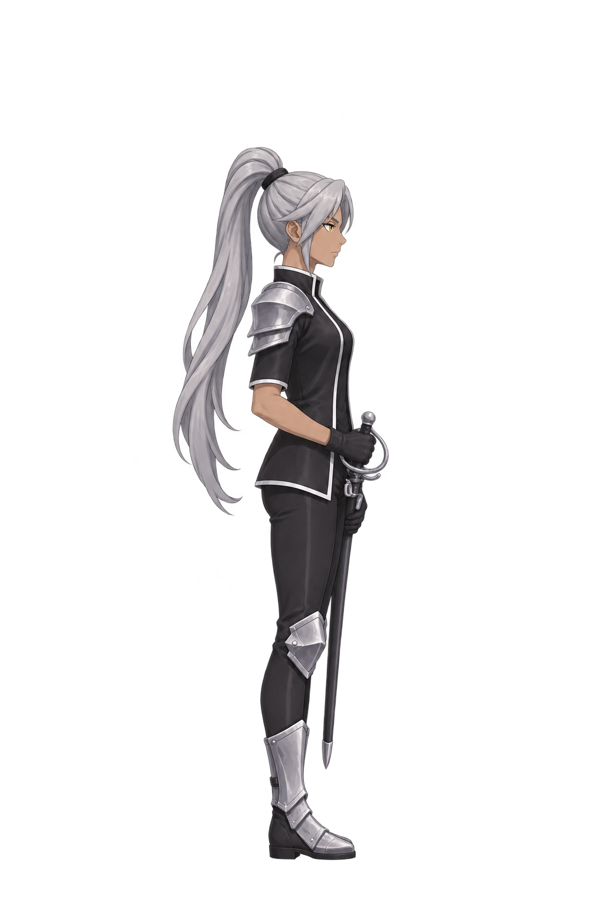
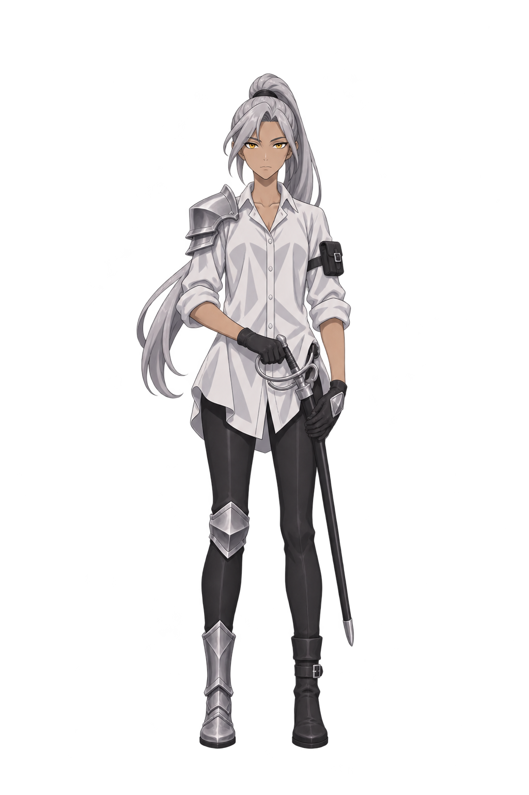
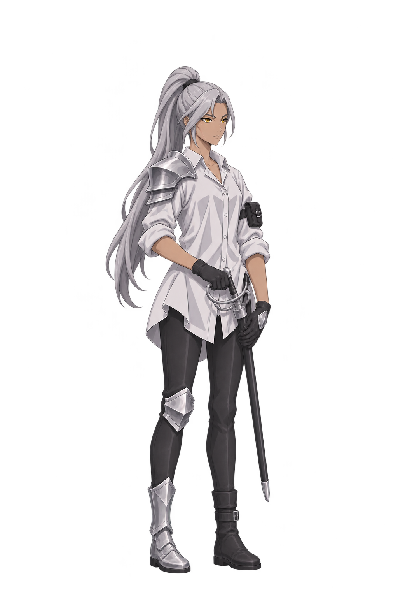
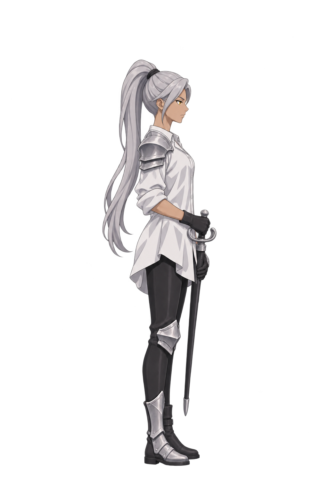

자연스럽게 서 있는 자세 · 상체 X자 벨트 제거 · 의상 2종 × 3방향장비 좌우는 정면 화면 기준으로 지정하고, 회전 시 같은 신체 부위에 유지하도록 제작했습니다.






정면 화면 왼쪽: 견장·무릎 보호대·금속 보호 부츠(신체 오른쪽). 정면 화면 오른쪽: 장갑 손등 소형 금속판·팔 가죽 파우치(신체 왼쪽). 양손 가죽 손목 장갑. 오른손 검손잡이·왼손 검집은 신체 기준입니다.요청 모델 GPT Image 2.6 High. 각 PNG는 후처리하지 않은 생성 원본이며, 생성 완료와 설정 검수·사용자 합격은 구분합니다. 방향별 상세 차이와 미달 항목은 검수 기록을 확인해 주세요.